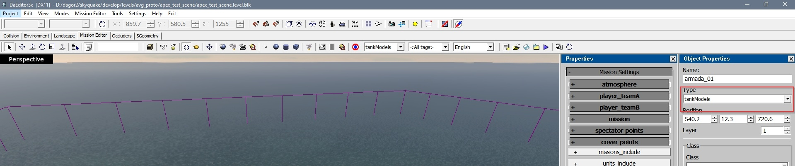

How to Test Assets on Maps (Basic Workflow)
This guide provides essential steps for testing assets on maps. Note that there are differences between War Thunder and daNetGame-based projects.
Build Changes in Assets
If you’ve made changes to an asset, open it in Asset Viewer and build the corresponding components:

{kind=link}
{kind=link}
{kind=link}
Export the Map with the Asset
{kind=link}
{kind=link}
{kind=link}
Launching the Level
The method for launching the level varies by project.
daNetGame-based projects
The following steps related to daNetGame-based projects are described using the Enlisted project as an example.
To see your map in the game, you should launch the scene that includes your map,
which is a .blk file. There are two main approaches:
Using the Launcher:
Run
/enlisted/game/z_enlisted_launcher.batSelect the correct mission from the dropdown (the one with your exported map). Customize mode, graphics settings, etc., if needed.
Click Play to launch the game.
Manually:
Create a
.batfile in the/enlisted/game/directory.Open it with a text editor (e.g., Notepad, Notepad++, VSCode).
Add the following line:
@start win64\\enlisted-dev.exe -scene:gamedata/scenes/<your_scene_path>.blk -config:disableMenu:b=yes
Save and run the
.batfile to launch your scene.
While the launcher is the preferred method, manual execution is useful for testing new scenes that haven’t been added to the launcher yet.
Enlisted CDK
Launch
/Enlisted/modsEditor.batSelect your scene. Choose the team, mode, and other settings using the wrench icon.
Click Load or double-click the scene name to open it.
War Thunder
In War Thunder, you will use the Mission Editor, which daNetGame-projects do not have. You will have to create your mission using the following steps:
Select Vehicle Type from the dropdown:
armada: Aircraft
tankModels: Tanks
ships: Ships (Others are non-playable.)
Place the unit on the map using the Create Unit button, then click the map to position it.
Note
Aircraft will appear in the air, while tanks and ships will be placed on land.
Change Vehicle Properties: If the wrong vehicle type is selected, modify it in the Properties panel (press
Pafter selecting the unit).
After that you will have to choose:
Vehicle model
Weapon type (you may set to
default)Bullets (usually
HEordefault)Bullets count
It can be done in the same unit’s Properties panel:

Configure Mission Properties:
Find your unit’s army number (different parties - different armies in pvp) in unit’s Properties panel.
Assign the unit’s army number to Team A in Mission Settings panel (deselect unit and press
Pbutton).
Specify your unit in wing inset.
In the same Mission Settings panel:
Save the Mission: Save your mission in
<project_name>/develop/gameBase/gameData/missions.
Important
Be sure to save after every change – there is no autosave.
Play the Mission: Once ready, click the Play button.
{kind=link}
{kind=link}
{kind=link}
{kind=link}
{kind=link}
{kind=link}
{kind=link}
{kind=link}
{kind=link}